Five controls, none of them load-bearing alone
They are independent on purpose. Any one of them being wrong has to leave the other four standing — a single gate that mostly works is one bug away from nothing, and five narrow ones are one bug away from four.

What the gate is actually made of
Control five is the only one that isn't a file. The other four can be read straight out of the
repository — a Role, a policy, a NetworkPolicy, each with a diff and a history. The merge gate
is a setting on GitHub, so rather than describe it from memory, here it is read back off the API
for main on 2 October 2026. It changes rarely, which is exactly why it should be
written down: a control nobody re-reads is a control nobody notices drifting.
On the branch
| Setting | Value | What it stops |
|---|---|---|
| Require a pull request review | on | Merging without anyone looking at the diff |
| Require approval from a code owner | on | The agent approving its own work — see below |
| Dismiss stale approvals | on | Reviewing a diff, then pushing more commits under the same approval |
| Enforce for administrators | on | Me skipping my own rules, which is the one I'd skip first |
| Require up to date before merging | on | Merge conflicts resolved by whoever merges, on a diff nobody re-read |
| Require linear history | on | Merge commits, so the history stays readable as a log of intent |
| Allow force pushes | off | Rewriting merged history |
| Allow deletions | off | Deleting the branch that holds the only record of a change |
main is the only protected branch. The number of required approvals is zero, which
looks wrong and isn't: nothing is required by number, the review is required from a
code owner instead. That holds because CODEOWNERS is a wildcard — every file has an
owner, so every pull request needs one. Drop the wildcard and a zero count would mean no review
at all.
The agent holds write access to this repository, so it is allowed to approve its own pull request in principle. What stops it is the branch above, not its permissions: it is not the code owner, so it cannot give the approval its own pull request needs. Its identity is described under secrets.
What the reviewer is checking
The CI workflow has five jobs. Three are required checks, so a pull request cannot merge until all three are green. Two more run and report but aren't required, for different reasons.
- Lint — YAML lint over the cluster tree. Catches the malformed manifest before Flux tries to apply it and the reconcile fails visibly.
- Validate — builds every root Flux reconciles with Kustomize, all forty of them, read from the sync files rather than a hardcoded list so a new component is covered as soon as its sync object lands. It also builds the cluster directory itself, which is mostly Flux's own bootstrap, and checks that the registry's config is strict JSON, which Kustomize cannot see because a broken string is still valid YAML.
-
Secret Scan — TruffleHog over this pull request's commits rather than its tip,
so a credential committed and then deleted in the same branch still fails the build. It reports
only credentials it can verify against the provider, and only across the commits this pull
request adds. It is not a sweep of everything ever merged. This is the check that makes
AGENTS.md's instruction to grep before committing worth anything. - Kyverno policy tests — the admission policies' own fixtures. It runs and it reports, but it is not a required check.
- Notify failure — deliberately skipped unless something failed, which is why it can't be required: a job that only reports on failure has nothing to report on a green run.
The three required checks are all content gates. They verify that what is in the pull request is well-formed and free of credentials the scanner can verify. None of them verifies that it's correct — that is the review, and the review is the part that isn't automatable.
The workflow only starts when a pull request touches a fixed list of paths — the cluster tree, the node playbooks, the workflows themselves, the local hooks, this site, and a few config files. A pull request that only touches a README or a diagram source never runs it, so on that pull request the three checks say nothing at all. I don't lean on GitHub's behaviour when a required check never reports — that's the first thing to check if a merge is ever refused for no visible reason.
Before the branch exists
Two things run locally, and both are opt-in in a way worth being honest about. They only fire
when core.hooksPath points at the repository's .githooks directory,
which the agent's mounted git config does. On a clone where nobody has set that they are inert and
there is no signal that they're missing. The commit hook has one more quiet condition of its own:
with no pre-commit tool installed it still runs the rebase check and skips the rest.
They're a speed bump that catches a stale branch early, not the control that stops it. The control
that stops it is the branch protection above, which is why this layer failing open changes
nothing.
- On commit — a rebase check, then the pre-commit framework: secret scanning, YAML parsing, trailing whitespace, a missing final newline, and large files. The rebase check runs first and needs no network, so a stale branch gets caught on every commit rather than at push time.
-
On push — the same rebase check, now with the network: it refuses a branch that
doesn't contain the current
origin/main, because a stale pull request is one GitHub will refuse to merge anyway, and finding that out here is cheaper.
CODEOWNERS is the file that makes the code-owner rule mean anything. It assigns the
whole repository to me with a wildcard, and then repeats the important paths explicitly so the
intent survives being read at a glance: the agent's own identity files, its RBAC, the workflows
that gate its pull requests, and CODEOWNERS itself. Those are the files that decide
what the agent can reach and who reviews it, so a change to any of them needs a human, not a
pattern match. The wildcard is what makes the zero approval count above safe; the explicit list
is what makes it obvious at a glance who actually reviews the parts that matter.
Five things it does not do, none of them hidden:
- The review count is zero. It is the setting I would re-read first, and it is the one a reader cannot check for themselves.
- Policy tests aren't a required check. The Kyverno fixtures run and report, but a pull request that breaks an admission policy can still merge.
- Nobody reviews that this stays on. Disabling a branch protection rule is silent. Nothing in the repository fails when it happens, because the rule was never a file — which is the whole reason this section exists, and also its limit.
- Nothing validates the change against the live API. A Kustomize build proves the tree assembles, not that the cluster will accept it. A field the server rejects, or a server-side apply conflict with a resource some other manager owns, only shows up when Flux reconciles. Catching that earlier needs a dry run against the real API, which nothing here does.
- The local hooks are a speed bump. They run for the agent and for any clone that configured them. Anything that matters is caught again by the required checks or by the merge being refused. Whitespace and file size are caught here and nowhere else, while the hook is running, and neither can reach the cluster.
Reach, not authority
| It can | It cannot |
|---|---|
| Read any workload, pod, log, event, PVC, network policy, Flux object or CRD status | apply, patch, delete, edit — or run
helm at all |
| Query metrics and logs directly, and read the alerting pipeline's own logs | Read a secret value, exec into a container, port-forward, or mint a service account token |
| Push a branch and open a pull request, including a one-off job that prints what it needs | Merge to the cluster repository, or change a repository setting |
| Reproduce a failure by running the same request from a pod it controls | Reach the API server by any path outside its approved egress rules |
When the agent needs something it can't read, the answer is a reviewed job in the repository that reads it and logs a sanitised result, never a wider role.
Permissions: get, list, watch, and nothing else
The ClusterRole behind the agent has get, list and watch
on the resources it needs and no write verb anywhere.
- No secrets. It can see that a secret exists and what refers to it. It can't read one, so the layer that would leak a credential has no credential in it.
- No
pods/exec. Reading a container's stdout is fine. Getting a shell inside one is not. - No token minting. It can't create a service account token and climb from there.
Least privilege here means the role is small on purpose and stored in git, so widening it is a visible diff rather than a decision someone made in a shell. There's no host-level escape hatch to find either: the account that can log into the nodes has no passwordless sudo, and the agent has no ssh path at all.
That role is only half of it. Two Kyverno ClusterPolicies watch the agent's own identity, because they cover the case where the agent talks me into a bad change.
-
The identity stays read-only. Its cluster role may not gain a verb outside
get/list/watch, and its service account may only be bound to the read-only roles. It re-checks the role and binding that already exist, not just new ones. -
Defence in depth on the privileged calls. Requests made as the agent are denied
pods/exec, service account token creation, and writes to secrets. The RBAC already withholds all three; this holds if that RBAC is widened by mistake.
RBAC says what is allowed. The policy says what stays allowed. A pull request that quietly adds
pods/exec to the agent's role is a plausible change to make at the end of a long
day, and it's the one that undoes everything else.
Both policies enforce, so a violation is refused rather than reported. The read-only one fails closed: if Kyverno is down, RBAC changes are blocked rather than waved through. The policies have tests that run in CI: fixtures for a widened role, a widened binding, and a cluster-admin binding, which must be refused, plus the read-only shape, which must pass clean.
Secrets: one path in, and the agent isn't on it
Secret values live in a password manager. External Secrets Operator pulls one declared item per need out of it through an in-cluster bridge, and syncs it into the namespace that needs it. Nothing is copied into git, and there is no second path, because a second path is just a leak you haven't noticed yet.
The agent's own credentials follow the same rule with one extra step. Its identity is a GitHub App rather than my personal account, so the reviewer and the author aren't the same identity. The App's key is mounted only into the containers that mint tokens: an init container mints one at start, a sidecar re-mints before expiry, and the agent reads a short-lived token from a shared empty directory. The durable key never enters the container the model drives. A compromise there yields a token that dies within the hour, not a key that can mint more.
The same idea covers the other integrations: the agent posts to a chat channel through a webhook, not through a chat account. There's no chat API client in the container, no bot with broad permissions to borrow, and the webhook credential is delivered from the vault like everything else. It can talk; it can't read the channel, join anything, or act as anyone.
Networking: default deny, then a written exception
Every namespace is default-deny for ingress and egress with a NetworkPolicy. Nothing talks to anything until a policy says it may, and the exceptions are objects in git like everything else. The agent's own egress is a short list: DNS, the API server, the event webhook, and one host over 443 for git.
The API server is a host process, not a pod. A namespace selector will never match it, so a policy that looks correct allows nothing to reach it. It needs an explicit address block. This cost me an afternoon and it's the single most common way a default-deny cluster looks broken when it's actually just policy.
The pleasant side effect: "can the agent do X" is usually answered by reading one policy file rather than by trusting the prompt.
Runtime behaviour and images
Three layers, and they see different things.
- Admission sees intent: what a manifest asks for, before it exists. It holds the two policies above and nothing else right now.
- Scanning sees images: it reports high and critical findings that have a fix available, and nothing else, because an unfiltered list on a fat base image overruns the apiserver's response limit and fails instead of reporting. Failed scans alert too, since a scan that never ran otherwise looks clean.
- Runtime detection sees behaviour: what a process does after it starts. That's Falco, running a curated rule set. It's the layer that catches the thing the other two can't, and it's also the layer that generates the most noise, so the exemptions are written narrow on purpose — by process, parent and host, never by file path or image name.
The layering only works if each one is genuinely blind to what the others cover. That is the argument for running all three rather than picking the best one: they fail differently, and together they cover intent, contents and behaviour.
Change flow
Three different reasons a change shows up, and one bad habit people reach for instead. A version moved upstream. A machine needs patching. Or I just decide something should be different. All three are handled as code — a diff in the repository, reviewed — and none of them is handled by logging in and manually running something.
![Three ways a change starts, into one pull request, then branching to two appliers. When I ask for a change it comes via Hermes, or a pull request I write myself. When something upstream moves, Renovate proposes the version. When a machine needs updating, it is a change to node configuration. All three reach one blue pull request, merged by a human. From there it branches: a change touching the cluster goes to Flux to apply manifests, and a change touching the machines goes to Ansible to run the playbooks.](assets/img/patching.svg)
The hosts
Node configuration is Ansible playbooks in the same repository as everything else: base packages, kernel settings, the pinned Kubernetes snap channel, the kubelet's node address, the mounts, the accounts. A run resolves its secrets from the vault at run time, so nothing lands in git. Security updates then install unattended, and the machines reboot to apply them on a staggered timetable — one host at a time, ordered so control-plane quorum never drops.
That last part is why a reboot is not an alert here. It's the patching mechanism working, and paging on it would just train me to ignore the pager. Reboots are annotations on the node dashboard instead, so an unscheduled reboot is obvious by looking rather than by waking me up. See Alerting.
A role there looks for what only a host can see: a CSI mount a storage volume left behind when it was recreated, which stops a new pod from starting while every health check upstream stays green. And the API server's own flags — including who it trusts to authenticate a human — are a playbook here rather than a manifest, which makes them one of the few changes a person runs rather than merges and forgets.
The versions
Nothing in the cluster floats on latest. Chart versions, image tags, GitHub Action
versions and the CLI tools the pipeline pins are all pinned in the repository, and Renovate checks
hourly for newer ones and opens a single pull request when it finds one.
So a version changes the way everything else changes: a reviewed merge, with the checks run against the new version first. A pin nobody merges stays pinned, so Renovate's pull requests are a to-do list that can rot. That's the price of nothing silently upgrading itself underneath me.
It understands Helm values and Kustomize overlays, which is most of what this repository is, and it can be told to hold a release back for a few days before proposing it. Waiting a week before proposing a two-year-old tag is exactly backwards; waiting a week before proposing yesterday's release is the point.
The pod is disposable, and so is everything in it
The agent runs in a container designed to be killed without losing anything. Config and skills are re-seeded from git on every start. Work happens in a fresh worktree per task, thrown away after. Nothing durable lives only inside the pod, which means "restart it" is always a safe first move.
Its knowledge is versioned like code: the skills it loads per task are files in a repository it owns, with a history, and I can read any of them. When it learns something the hard way, the fix goes in the skill and gets committed — which is how most of the entries on Why got there.
The agent may not change its own tooling without asking: its git configuration, its credential path, its deployment. It did once, mid-task, and then couldn't recover itself. Everything about its own environment needs me to approve it first, including when the change looks obviously correct.